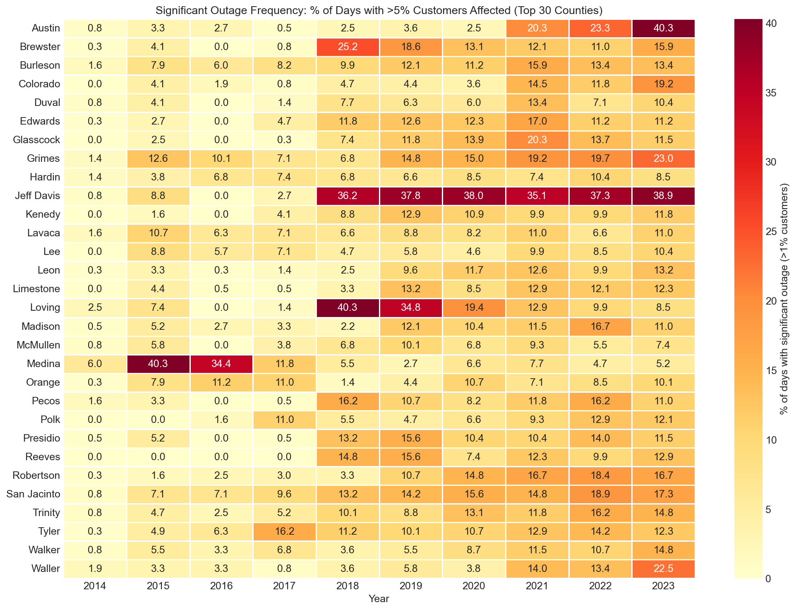
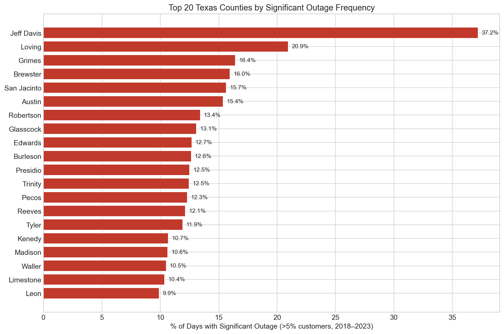
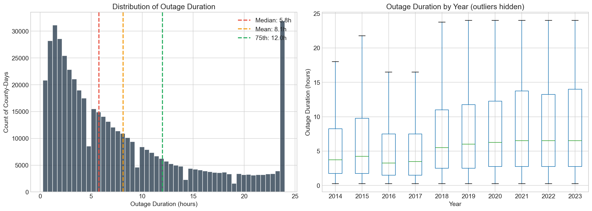
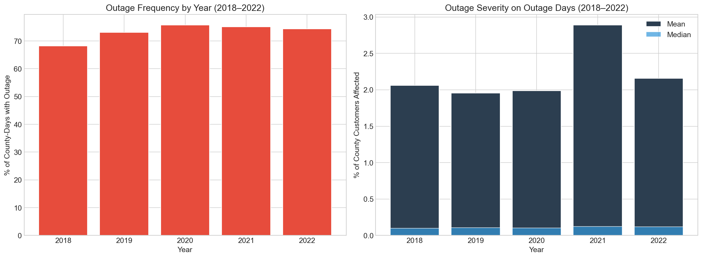
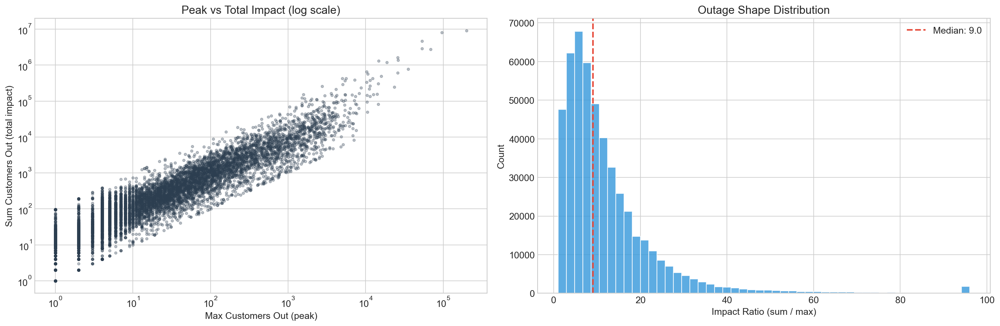
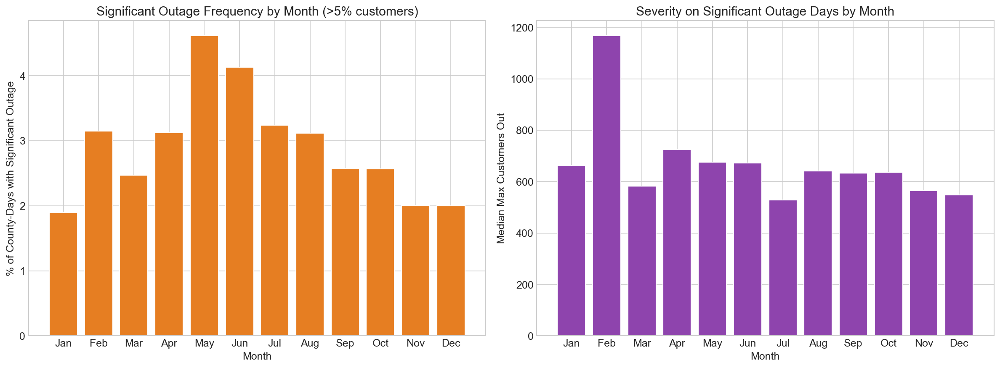

Coverage
254
Texas counties represented
Data Engineering + Analytics Portfolio Project
A Texas county-day outage intelligence pipeline that combines power interruption activity, weather observations, and storm-event records into a machine-learning-ready dataset.
Why this is recruiter-friendly
Coverage
254
Texas counties represented
Time span
2014-2023
10 years of county-day records
Scale
927,608
Rows in the outage dataset
Largest daily peak
455,986
Max customers out on a single county-day
Key Findings
The heaviest cumulative outage burden is concentrated in large urban counties, with Dallas, Harris, Travis, Tarrant, and Bexar leading by total summed customer interruptions.
June shows the highest outage-day rate in this processed dataset, with elevated activity across late spring and summer as weather risk intensifies.
The largest daily peaks appear during the February 2021 Texas winter crisis, including major disruption in Harris, Dallas, and Tarrant counties.
The final outputs align outage behavior with weather and storm covariates at the county-day level, making the data directly usable for ML experiments or forecasting workflows.
Visual Summary






Pipeline Design
Collect outage data, weather observations, and storm-event records from public sources.
Normalize each source to county-day granularity and align counties through mapping logic.
Add coverage adjustments, weather features, storm indicators, and temporal features.
Export figures and summary views that surface risk concentration, seasonality, and impact.